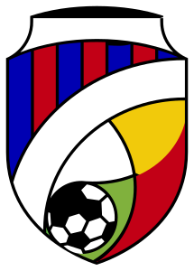

⚽
VIKTORIA PLZEŇ • QR CHALLENGE
Fotbalový kvíz
Maty Káma
Naskenuj QR kód, vyber odpověď a postupně projdi celý kvíz.
Přezdívku použiješ jen jednou. Tento kvíz je určen pro jedno zařízení.

VIKTORIA PLZEŇ • QR CHALLENGE
Naskenuj QR kód, vyber odpověď a postupně projdi celý kvíz.
Přezdívku použiješ jen jednou. Tento kvíz je určen pro jedno zařízení.